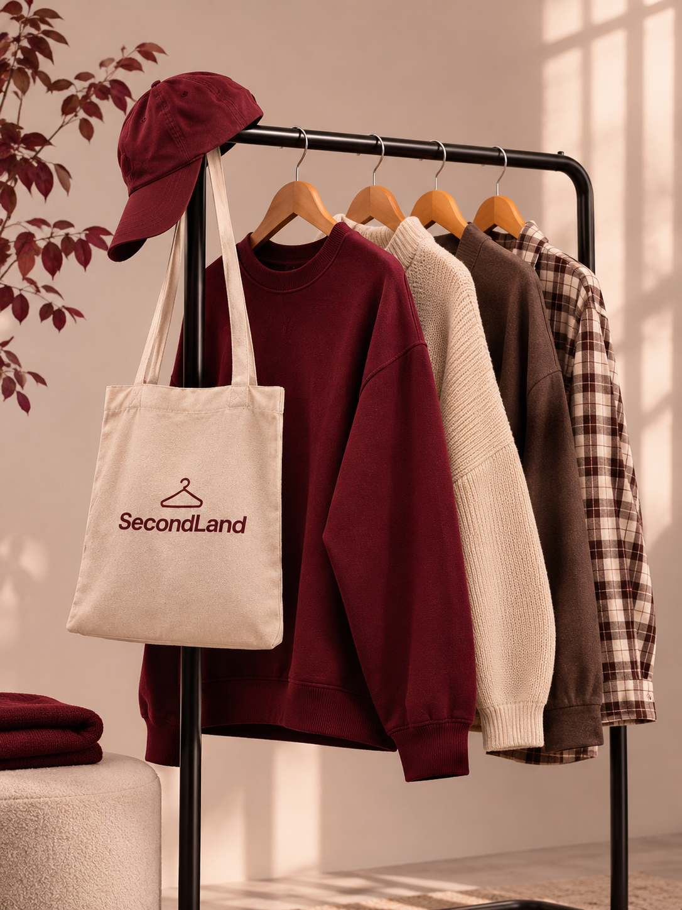

Выгодные покупки
Находи одежду и аксессуары по приятным ценам.
01 Знакомство с SecondLand
SecondLand — Telegram-площадка для перепродажи одежды в Узбекистане. Здесь можно найти вещи в хорошем состоянии по приятным ценам или продать то, что больше не носишь.

02 Больше, чем просто объявления
Одна площадка — две возможности: найти что-то классное для себя или дать хорошей вещи нового владельца.
Находи одежду и аксессуары по приятным ценам.
Размести вещь в хорошем состоянии и найди ей нового владельца.
Не выбрасывай то, что ещё может долго служить.
Следи за объявлениями и не пропускай интересные предложения.
03 Доверие начинается с опыта
Покупатели находят интересные вещи, а продавцы освобождают место и дают одежде второй шанс.
«Нашла вещь, которая давно была в поиске. Здорово, что можно выбирать качественную одежду и не переплачивать».
ПОКУПКА«Разместил объявление о вещи, которую больше не ношу. Приятно, что она может пригодиться кому-то ещё».
ПРОДАЖА«Люблю находить необычные вещи по доступной цене. Теперь периодически заглядываю посмотреть новые объявления».
ПОДПИСКАТексты в карточках — демонстрационные примеры оформления. Перед публикацией замените их реальными отзывами участников.